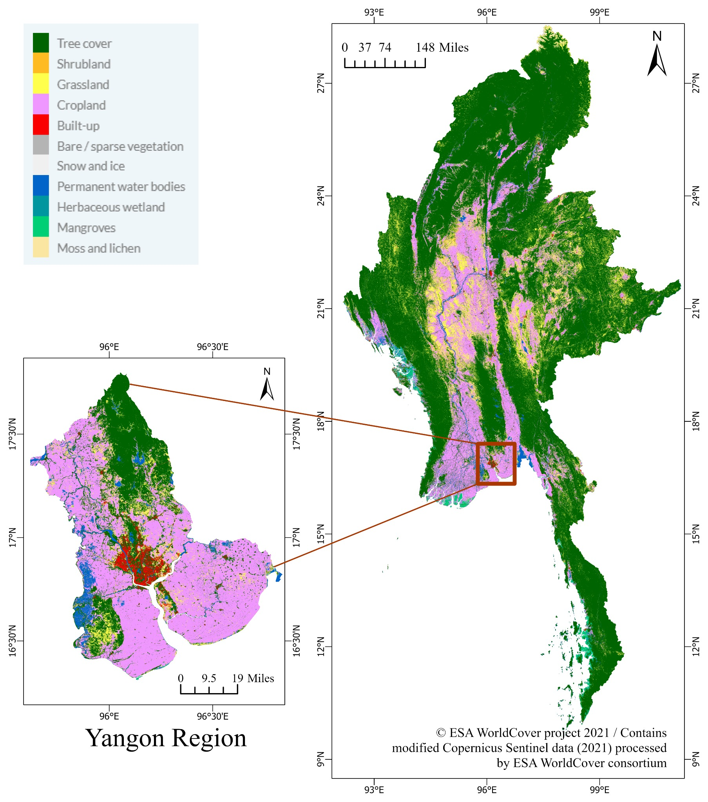

Air Pollution in Myanmar
Spatiotemporal patterns, health impacts, and short-term PM₂.₅ forecasting
My graduate research examined air pollution in Myanmar by integrating ground-monitoring observations, satellite products, meteorological data, population and health-related data, statistical modeling, and machine-learning approaches. The research investigated how pollution varies across space and time, how meteorological conditions influence pollutant concentrations, what observed pollution levels may mean for public health, and whether short-term PM₂.₅ concentrations can be forecast using data-driven models.
View research details
Research data workflow
Integrated heterogeneous environmental and population-health data into analysis-ready datasets using reproducible cleaning, validation, and quality-control steps.
Ground-based air quality

Analyzed multi-year PM₂.₅ and ozone observations to identify seasonal, monthly, and diurnal pollution patterns in Yangon.
Satellite & spatial analysis

Processed, filtered, and analyzed TROPOMI and MAIAC AOD datasets to investigate spatial patterns across Myanmar.
Meteorology & statistical modeling

Applied generalized additive models to investigate nonlinear relationships between air pollutants and meteorological conditions.
Health impact assessment
Estimated the potential mortality burden associated with long-term PM₂.₅ exposure in Yangon using population, baseline mortality, and epidemiological concentration-response information.
Short-term PM₂.₅ forecasting
Developed and evaluated LSTM and XGBoost models using hourly PM₂.₅ and meteorological predictors, with SHAP used to examine feature contributions. Detailed evaluation results are being finalized.
Geospatial data visualization

Processed and visualized land-cover data to examine spatial patterns across Myanmar, with a detailed view of the Yangon Region.
Integrated Assessment of Air Pollution Dynamics and Health Impacts in Myanmar: Evidence from Ground Monitoring, Satellite Observations, and Modeling
Read publication →